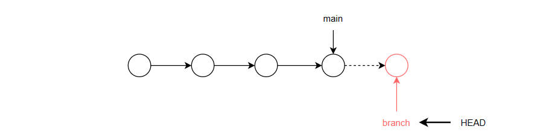

- 说明
- 通过分支实现项目的分工协作
- 各分支的操作并不影响主分支；且分支的进度通常要领先于主分支
- 当分支合并到主分支后，主分支的整个时间线才往前推进，进度才能和分支保持一致
- main总是指向最新的提交；而HEAD指向当前的活动分支；如果没有分支，就指向主分支main
- 只有提交commit过1次后才能查看分支
-
无分支时，HEAD指向主分支

分支单独工作，HEAD指向活动分支
 分支合并到主分支
分支合并到主分支
- 查看分支
- 当前分支以*号表示，且颜色为绿色
-
//不带参数：查看本地分支
$ git branch
dev
* master
//查看所有分支
$ git branch -a
dev
* master
//查看分支最近提交信息
$ git branch -v
dev 29aee33 1st commit
* master 29aee33 1st commit
//查看远程分支
$ git branch -r
- 创建分支
-
$ git branch branch_name
- 切换分支 checkout
- 指定要切换的分支名
-
$ git checkout dev
Switched to branch 'dev'
- 合并分支 merge
- 通常在主分支合并其它分支
- 将其它分支合并到主分支；主分支会前进一次forwards
- 原有分支仍然存在
-
$ git merge dev
Updating 29aee33..c9f8938
Fast-forward
demo.txt | 0
1 file changed, 0 insertions(+), 0 deletions(-)
create mode 100644 demo.txt
- 删除分支
- 指定删除的分支名
- 只能在当前分支删除其它分支
-
$ git branch -d dev
Deleted branch dev (was c9f8938).
- 分支操作
- 请使用shell完成以下操作
-
创建新文件夹Demo作为工作目录
初始化工作目录
查看分支
创建测试文件test.txt并add、commit提交到本地仓库
查看分支
创建分支dev
切换至分支dev
查看分支
创建测试文件demo.txt并add、commit提交到本地仓库
切换回master分支，查看工作目录中文件的变换情况
合并分支dev到主分支
查看分支
删除分支dev
查看分支
-
冲突
.主分支提交前进的同时，某一分支也提交。当主分支合并分支时，就会出现冲突
.尽量避免同时操作同一个文件
.主分支面向生成环境，应只做阶段性的合并
.日常工作应使用开发分支和团队分支、个人分支：个人分支合并到团队分支；团队分支合并到开发分支